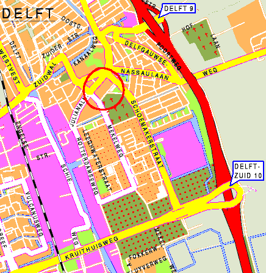

How to get to Zuidplantsoen 4
Map
Zuidplantsoen 4 is circled in red on the map.

This is a fragment of a larger map.
{kind=link}
By Car
From the direction of Rotterdam:
- Follow the A13, and exit at "Delft Zuid".
- Make a 90-degree turn on the giant roundabout (from north to west). Keep to the right, following the signs "TU Delft".
- At the bottom of the exit, turn to the right onto the "Schoemakerstraat".
- Follow this road until you have passed the large TNO complex on your right, the TU library on your left, and a church on your right.
- After you have passed the church, take the first turn to the left. This is the Zuidplantsoen street.
- The BAPC building is now on your right. The entrance is behind the gray gates behind the parking lot.
From the Hague, the simplest route is:
- Follow the A13, and exit at "Delft Zuid".
- On the exit, keep to the right, and follow the signs "TU Delft".
- At the bottom of the exit, turn to the right onto the "Schoemakerstraat".
- Follow this road until you have passed the large TNO complex on your right, the TU library on your left, and a church on your right.
- After you have passed the church, take the first turn to the left.
- The ITS building is now on your right. The entrance is behind the gray gates behind the parking lot.
By public transport
By train:
- Take the train to station "Delft".
- Leave the station at the side of the center of Delft; to your right from the direction of Rotterdam, to your left from the direction of the Hague.
On the square before the station, you can take a taxi or a bus, or you
can walk (10 to 15 minutes).
By taxi, ask for "Zuidplantsoen 4".
If you wish to continue from the train station by foot (about 15 min. walk), cross the station square, turn right at the Westvest,
turn left at the Zuidwal, cross the canal over the low bridge, and follow
the Michiel de Ruyterweg until you cross the Julianalaan. The old building on the left is
Zuidplantsoen 4. The entrance is at the back of the building, behind the gray
gates.
By bus: there are several buses that stop very close to the building,
all departing from the Central Station:
- 64 (local), stops at Michiel de Ruyterweg
- 66 (to Delfgauw), stops at Michiel de Ruyterweg
- 121 (to Zoetermeer), stops at Julianalaan
- 129 (to Rotterdam), stops at Julianalaan
If the bus stops at Michiel de Ruyterweg (bus 64 and 66), the building is on the right of the road.
You have to walk to the back of the building. The entrance is behind the gray gates.
If the bus stops at Julianalaan (bus 121 and 129), the building is on the other side of the road. Cross
the road, walk to the right and take the first road on your left. The entrance is behind
the gray gates on your left.
BAPC 2005 is proudly sponsored by: